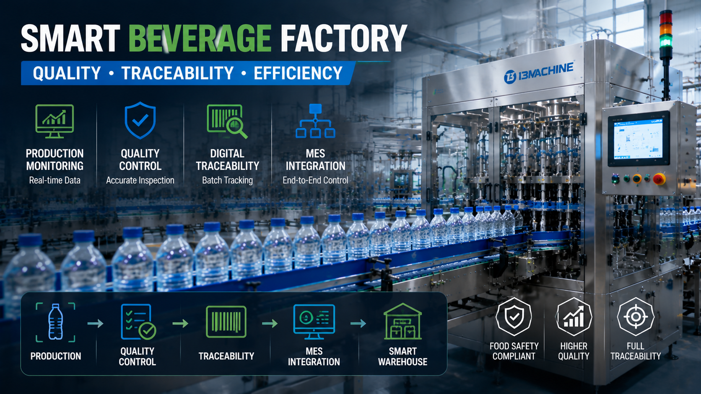

How Smart Beverage Factories Use Automation to Improve Quality and Traceability

Summary
The beverage industry is entering a new era where production efficiency alone is no longer enough.
For global beverage manufacturers, especially in Europe and North America, customers and regulators increasingly require:
Higher food safety standards
Complete product traceability
Real-time production monitoring
Digital quality management
Transparent manufacturing processes
Traditional factories often depend on manual records and operator experience, making it difficult to achieve complete production visibility.
Smart beverage factories solve this challenge by combining:
Automated production lines
Digital monitoring systems
Quality inspection technology
MES integration
Automated warehouse management
This article explains how automation helps beverage manufacturers improve product quality, achieve full traceability, and build future-ready smart manufacturing systems.
Technology
- Smart Beverage Factory Technology
- A smart beverage factory is not simply a factory with automatic machines.
- It is an integrated manufacturing ecosystem where production equipment
- quality systems
- and digital management platforms work together.
- 1. Automated Production Monitoring
- Modern beverage production lines collect real-time data from:
- Filling machines
- Capping systems
- Packaging equipment
- Conveyors
- Warehouse systems
- Managers can monitor:
- Production speed
- Equipment status
- Output quantity
- Production efficiency
- 2. Automated Quality Control
- Smart beverage factories use automation to improve consistency.
- Quality inspection can include:
- Bottle Quality Inspection
- Detect:
- Bottle deformation
- Surface defects
- Contamination
- Filling Accuracy Control
- Monitor:
- Filling volume
- Filling speed
- Product consistency
- Cap Sealing Inspection
- Check:
- Cap position
- Sealing performance
- Leakage risk
- 3. Digital Traceability System
- Modern manufacturers need to know:
- "What happened to every batch?"
- Smart factories can record:
- Raw material information
- Production time
- Machine parameters
- Operator information
- Quality inspection results
- 4. MES Integration Technology
- Manufacturing Execution System (MES) connects:
- Production
- ↓
- Quality
- ↓
- Warehouse
- ↓
- Management
- Creating a complete digital manufacturing information flow.
Challenge
Why Traditional Beverage Factories Need Digital Transformation
For many years, beverage factories focused mainly on:
Production speed
Equipment output
Labor efficiency
However, modern markets require much more.
Manufacturers must answer important questions:
Which batch was produced?
Which machine produced it?
What were the production conditions?
Was quality inspection completed?
Where is the finished product stored?
Challenge 1: Limited Production Visibility
Traditional factories often rely on:
Manual reports
Operator records
Paper documents
This creates problems:
Delayed information
Human errors
Difficult analysis
Challenge 2: Increasing Food Safety Requirements
Global beverage markets require stronger control of:
Hygiene
Product quality
Production processes
Especially for:
Juice
Functional beverages
Dairy drinks
Premium bottled products
Challenge 3: Quality Consistency
Manual inspection can be affected by:
Human judgment
Worker experience
Fatigue
Maintaining consistent quality becomes more difficult as production volume increases.
Challenge 4: Difficult Problem Tracking
When a quality issue occurs, manufacturers need to quickly identify:
Production batch
Equipment condition
Raw material source
Production parameters
Without digital systems, investigation becomes slow and costly.
Challenge 5: Lack of Data-Based Decision Making
Factory managers need real production data to optimize:
Efficiency
Maintenance
Quality
Production planning
Solution
Automated Beverage Manufacturing: Building the Factory of the Future
Automation does not mean removing human expertise.
It means allowing people to focus on:
Production management
Process optimization
Quality improvement
while machines handle repetitive operations.
1. Labor Efficiency
Manual Production
Requires more workers for:
Material movement
Machine operation
Packaging
Inspection
Automated Production
Automation reduces repetitive work through:
Automatic feeding
Automatic filling
Automatic packaging
Automated logistics
Result:Lower labor dependency.
2. Production Output
Manual Factory
Capacity is limited by:
Worker availability
Operating speed
Human fatigue
Automated Factory
Provides:
Continuous operation
Stable production speed
Higher utilization
3. Quality Stability
Manual Production
Quality depends heavily on:
Operator experience
Human attention
Automated Production
Automation provides:
Accurate control
Standardized processes
Better repeatability
4. Factory Expansion
Manual Model
Increasing capacity usually means:
More workers
More production space
Automated Model
Expansion can be achieved through:
Additional production modules
Higher-speed equipment
Digital optimization
5. Management Capability
Manual Factory
Management relies on:
Experience
Manual records
Smart Automated Factory
Management uses:
Production data
Equipment monitoring
Digital analysis
Workflow & Layout
Traditional Beverage Factory Information Flow
Production
↓
Manual Recording
↓
Paper Reports
↓
Management Review
↓
Decision Making
Problems:
Slow feedback
Data gaps
Human errors
Smart Beverage Factory Information Flow
Production Equipment
↓
Sensors & Automation System
↓
Quality Inspection
↓
MES System
↓
Warehouse Management
↓
Factory Decision Platform
Advantages:
Real-time information
Complete traceability
Data-driven management
Smart Beverage Factory Structure
📌 Production Layer
Includes:
Blow molding
Filling
Packaging
📌 Automation Layer
Includes:
PLC
Sensors
Industrial robots
📌 Digital Layer
Includes:
MES
SCADA
Data analysis
📌 Logistics Layer
Includes:
Conveyor systems
AGV
ASRS warehouse
Results & ROI
- Business Benefits of Smart Beverage Manufacturing
- Digital transformation creates value beyond automation.
- 1. Improved Product Quality
- Automation reduces:
- Human error
- Process variation
- Quality instability
- Result:
- More consistent products.
- 2. Faster Quality Problem Response
- When problems occur
- manufacturers can quickly identify:
- Production batch
- Equipment status
- Process conditions
- Reducing:
- Investigation time
- Product loss
- 3. Better Food Safety Compliance
- Traceability systems support:
- Quality audits
- Regulatory requirements
- Customer confidence
- 4. Higher Production Efficiency
- Real-time monitoring helps identify:
- Bottlenecks
- Downtime causes
- Improvement opportunities
- 5. Better Factory Management
- Managers move from:
- "Experience-based management"
- to:
- "Data-driven management"
- 📌 Example Business Value
- A smart beverage factory can achieve:
- Investment:
- Automation + Digital Systems
- ↓
- Return:
- Lower quality risk
- Higher production efficiency
- Better customer trust
- Long-term competitiveness
Equipment List
- A smart beverage factory may include:
- 📌 Production Equipment
- Blow molding machine
- Filling machine
- Capping machine
- Labeling machine
- Packaging machine
- 📌 Quality Control Equipment
- Bottle inspection system
- Filling inspection system
- Cap inspection system
- Vision inspection system
- 📌 Automation Equipment
- PLC control system
- Industrial sensors
- Robotic systems
- Conveyor systems
- 📌 Digital Manufacturing Systems
- MES system
- SCADA monitoring
- Production data collection system
- 📌 Smart Logistics Equipment
- Automatic palletizer
- AGV system
- ASRS warehouse
Project Overview / Opening
Why Smart Manufacturing Is Becoming the Future of Beverage Production
The beverage industry is becoming increasingly competitive.
Manufacturers must achieve:
Higher efficiency
Better quality
Stronger food safety control
Faster market response
Traditional production models cannot provide enough visibility and flexibility for future manufacturing requirements.
Smart beverage factories combine automation, digital technology, and intelligent management to create a more reliable production environment.
The goal is not simply producing more products.
The goal is producing better products with complete control and transparency.
Key Points
- Five Ways Automation Improves Beverage Factory Performance
- 1. Real-Time Production Monitoring
- Understand factory performance instantly.
- 2. Automated Quality Control
- Maintain consistent product standards.
- 3. Complete Traceability
- Track every production batch and process.
- 4. MES Integration
- Connect production, quality, and warehouse systems.
- 5. Data-Driven Management
- Improve decisions through accurate manufacturing data.
- 📌 Suitable Industries
- Smart beverage automation solutions are suitable for:
- √ Bottled Water Manufacturers: High-volume production with strict efficiency requirements.
- √ Juice Producers: Need better hygiene and quality control.
- √ Functional Beverage Companies: Require flexible and reliable production.
- √ Dairy Beverage Manufacturers: Need advanced process management.
Implementation / Workflow
How to Upgrade a Beverage Factory Toward Smart Manufacturing
Step 1: Analyze Existing Production
Evaluate:
Current equipment
Production problems
Quality requirements
Step 2: Identify Automation Opportunities
Possible improvements:
Automated production line
Inspection systems
Digital monitoring
Step 3: Design Smart Factory Architecture
Plan:
Equipment integration
Data communication
Factory layout
Step 4: Implement Automation System
Integrate:
Production equipment
MES system
Quality control
Step 5: Continuous Optimization
Use production data to improve:
Efficiency
Quality
Maintenance
Customer Value / Results
A smart beverage factory helps manufacturers achieve:
📌 Better Product Quality
Stable processes create consistent products.
📌 Stronger Food Safety Control
Complete records improve compliance.
📌 Higher Production Transparency
Managers understand factory performance in real time
📌 Lower Operational Risk
Problems can be identified and solved faster.
📌 Long-Term Manufacturing Competitiveness
Factories become ready for future market demands.
Conclusion / Next Step
Smart beverage manufacturing is no longer only about increasing production speed.
Modern factories need:
Quality control
Complete traceability
Digital management
Flexible production capability
Automation and MES integration help manufacturers transform traditional beverage plants into intelligent manufacturing systems.
We help manufacturers worldwide design, source, integrate, and deliver industrial automation projects from China's manufacturing ecosystem.
Our capabilities include:
Automated beverage production lines
Smart factory solutions
MES and production integration
Quality inspection systems
Automated logistics and warehouse solutions
Complete industrial project management
Whether you are upgrading an existing beverage factory or planning a new smart manufacturing facility, our team can help design a reliable automation solution based on your production goals.
📩 Contact us through our website Contact page to discuss your beverage factory automation and smart manufacturing project.
SEO Title
How Smart Beverage Factories Use Automation to Improve Quality and Traceability
SEO Description
The beverage industry is entering a new era where production efficiency alone is no longer enough.
For global beverage manufacturers, especially in Europe and North America, customers and regulators increasingly require:
Higher food safety standards
Complete product traceability
Real-time production monitoring
Digital quality management
Transparent manufacturing processes
Traditional factories often depend on manual records and operator experience, making it difficult to achieve complete production visibility.
Smart beverage factories solve this challenge by combining:
Automated production lines
Digital monitoring systems
Quality inspection technology
MES integration
Automated warehouse management
This article explains how automation helps beverage manufacturers improve product quality, achieve full traceability, and build future-ready smart manufacturing systems.
Related Blog
Start with Your Business Challenge
Tell us about your warehouse, factory, or production requirements. We'll help you explore practical automation solutions and relevant project references.